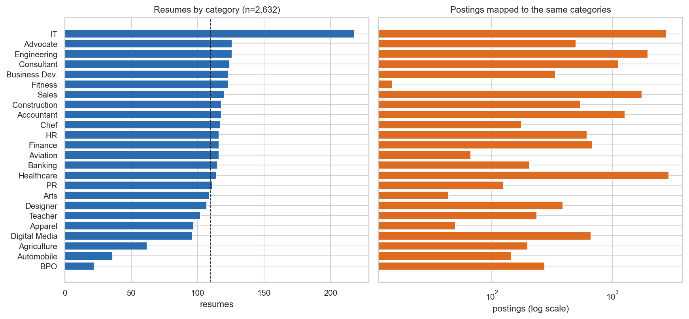
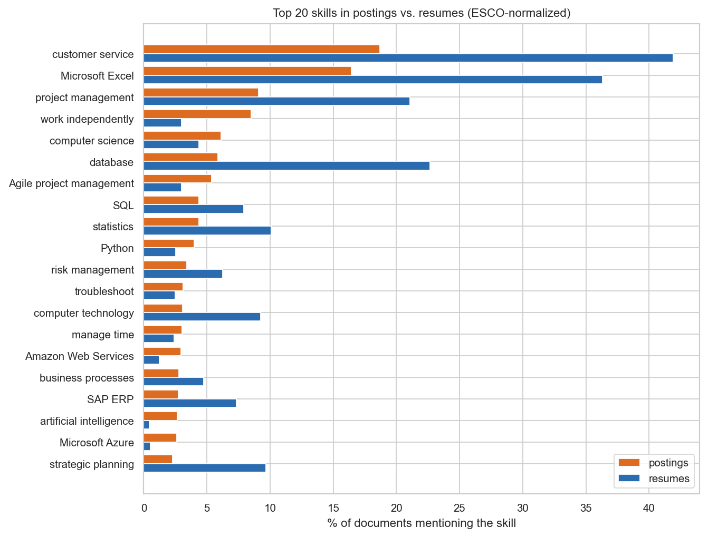
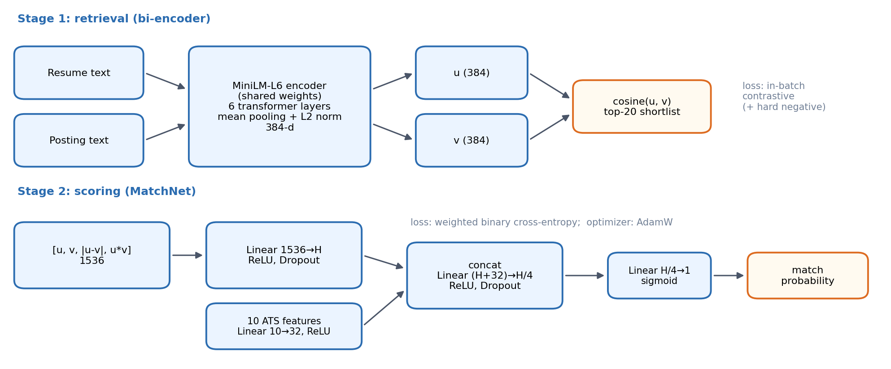
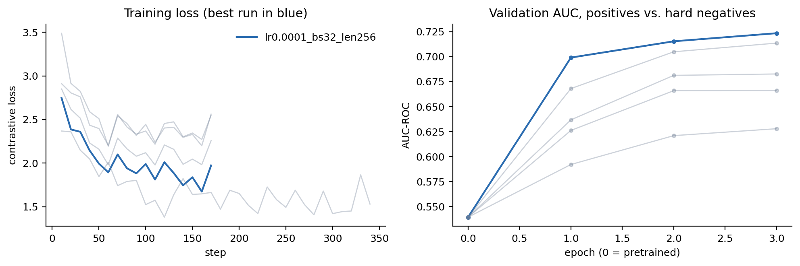
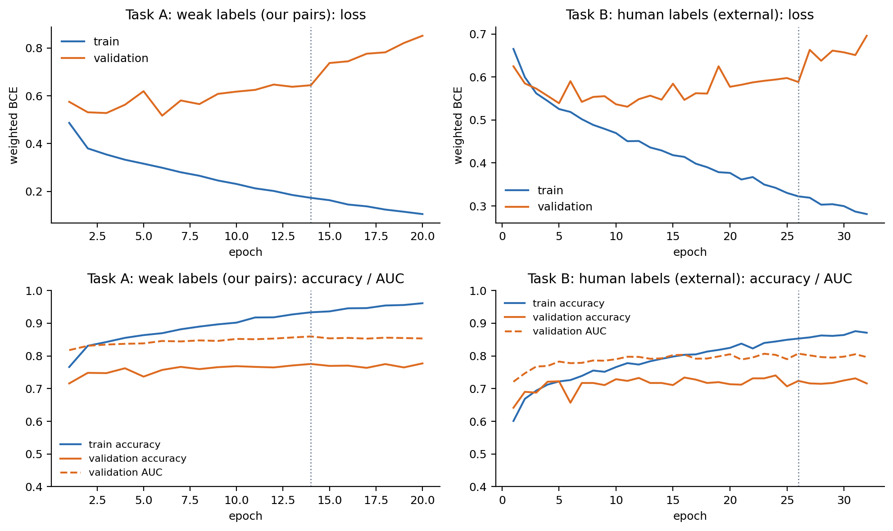
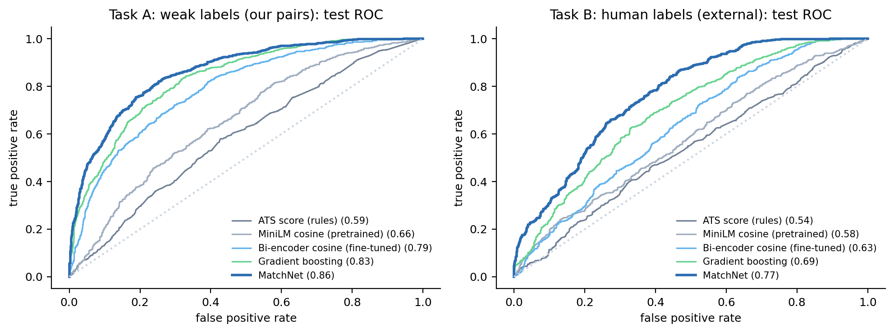
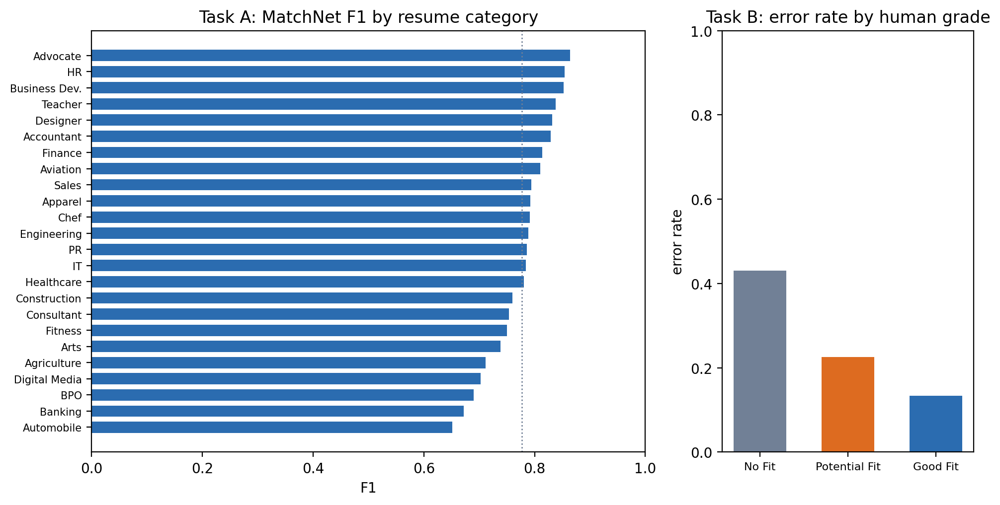
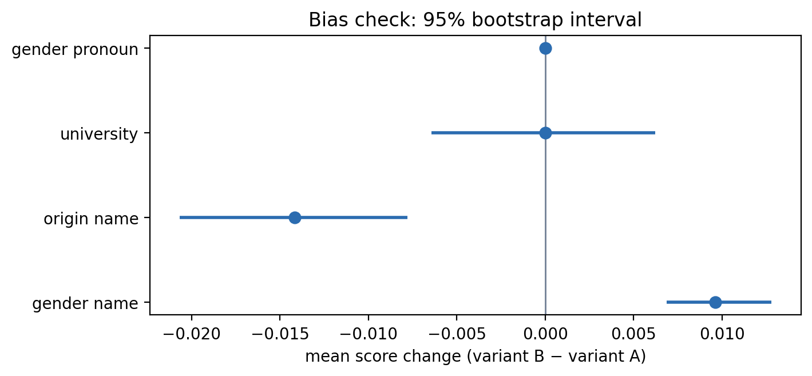
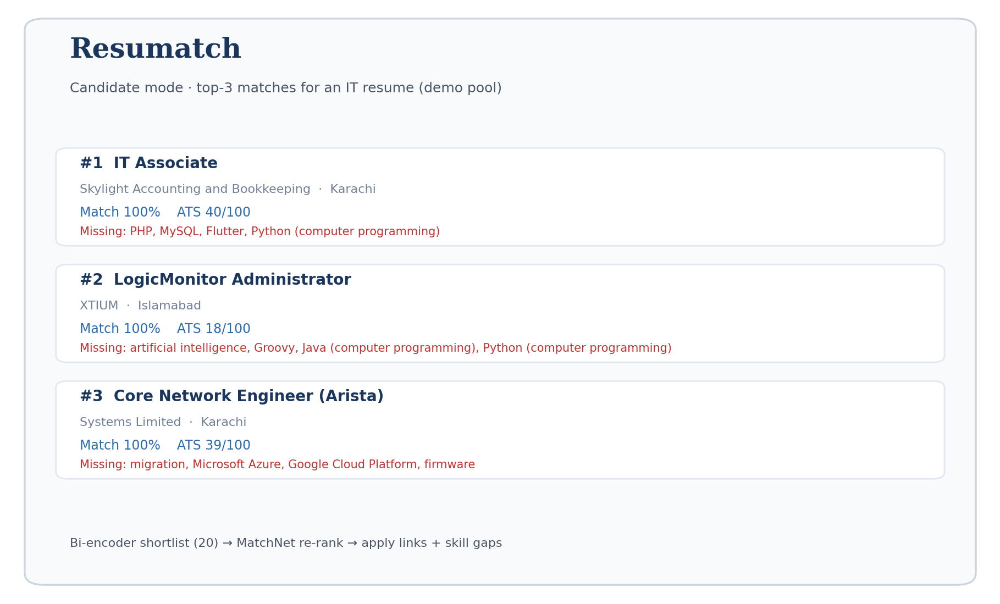

| Member | Roll No. / Section |
|---|---|
| Muhammad Sufyan | 24L-2601 / BSDS-5B |
| Muaaz Fahad | 24L-2563 / BSDS-5B |
| Hanan Ishaque | 24L-2537 / BSDS-5B |
Resumatch is a resume–job matching application for the Pakistani market. A job seeker uploads a CV and receives the three best Rozee.pk postings they can apply to, each with an apply link, a learned MatchNet score, a rule-based ATS score and an explicit skill-gap list. Recruiters paste a job description and a batch of CVs and get a ranked shortlist.
We collected and cleaned 2,632 resumes and 28,088 postings, built 15,755 weakly labelled
pairs and an open-jobs pool with apply URLs. Matching uses a two-stage PyTorch stack: a fine-tuned
MiniLM bi-encoder for retrieval and MatchNet, a small MLP over embedding interactions plus ten
interpretable features, for re-ranking. On occupation-level (weak) test pairs MatchNet reaches
AUC-ROC 0.862 and F1 0.784; on external human-labelled fit pairs it reaches AUC-ROC 0.768
and F1 0.737, beating a rule-based ATS score, TF-IDF, pretrained MiniLM and gradient boosting.
Hard negatives (related occupations) remain the main failure mode (error rate 0.490). A
counterfactual bias check on 300 pairs shows at most 1.7% of decisions flip when gender, name
origin or university is swapped. The hosted Streamlit app (app/streamlit_app.py) serves
both user modes with the trained weights from Hugging Face.
Hiring is a two-sided matching problem. Candidates often send one generic CV and never learn why they were filtered; recruiters face more applications than they can read. Keyword ATS tools reward stuffing and miss capable people who phrase skills differently. Our data confirms a vocabulary gap: 976 of the 2,278 distinct skills in postings never appear in any resume.
Product. Track A application. A candidate uploads a resume and sees the top three open postings with apply links, MatchNet and ATS scores, and matched/missing skills. A recruiter uploads a job description plus several CVs and gets a ranked shortlist. Matching and ranking models are trained by us; LLMs are used only for optional labelling and synthetic data.
Audience. Pakistani graduates and early-career applicants (Rozee.pk), and recruiters at SMEs who want an explained shortlist rather than a black-box score.
Cleaning drops empty/non-English text, repairs encoding, removes exact and near-duplicates (TF-IDF > 0.95), handles length outliers and masks email, phone and URLs. Features (train-only fit): TF-IDF, multi-hot skills, years of experience, standardized numerics, MiniLM embeddings. Splits are 70/15/15 by resume and by posting. Pairs: 7,859 same-category positives, 5,264 hard negatives, 2,632 random negatives.


The baseline ATS score (skills 0.50, experience 0.20, title 0.15, structure 0.15) reaches AUC 0.73 against random negatives but only 0.52 against hard negatives — so a learned ranker is necessary.

Bi-encoder. all-MiniLM-L6-v2 (6 layers, 384-d, mean pool, L2). Loss: multiple-
negatives ranking with in-batch negatives plus one mined hard negative (scale 20). Optimizer:
AdamW, 10% warm-up, linear decay, grad clip 1.0. Selected: lr 1×10−4, batch 32, length
256 (val AUC-hard 0.724, P@3 0.631).
MatchNet. Input [u,v,|u−v|,u ⊙ v] plus ten scalar features → Linear–ReLU–Dropout branches → logit. Loss: class-weighted BCE. Optimizer: AdamW, early stop on val AUC (patience 6). Selected Task A: lr 1×10−3, batch 64, dropout 0.3, H=256 (val AUC 0.860). Task B: lr 1×10−3, batch 64, dropout 0.5, H=128 (val AUC 0.807).
| Learning rate | Batch | Max len | Best ep. | Val AUC | Val AUC (hard) | Val P@3 | Min |
|---|---|---|---|---|---|---|---|
| pretrained MiniLM, no fine-tuning | 0.644 | 0.539 | 0.429 | – | |||
| 1×10−5 | 32 | 256 | 3 | 0.729 | 0.628 | 0.544 | 8 |
| 3×10−5 | 32 | 256 | 3 | 0.771 | 0.683 | 0.609 | 8 |
| 1×10−4 | 32 | 256 | 3 | 0.801 | 0.724 | 0.631 | 8 |
| 3×10−5 | 16 | 256 | 3 | 0.793 | 0.714 | 0.629 | 9 |
| 3×10−5 | 32 | 128 | 3 | 0.751 | 0.666 | 0.579 | 3 |
| Hyperparameter | Value | Task A: mean / max val AUC | Task B: mean / max val AUC |
|---|---|---|---|
| Learning rate | 1×10−4 | 0.835 / 0.839 | 0.773 / 0.781 |
| 3×10−4 | 0.841 / 0.847 | 0.781 / 0.793 | |
| 1×10−3 | 0.853 / 0.860 | 0.794 / 0.807 | |
| Batch size | 64 | 0.845 / 0.860 | 0.787 / 0.807 |
| 256 | 0.840 / 0.857 | 0.779 / 0.800 | |
| Dropout | 0.1 | 0.841 / 0.858 | 0.780 / 0.795 |
| 0.3 | 0.843 / 0.860 | 0.781 / 0.807 | |
| 0.5 | 0.845 / 0.858 | 0.788 / 0.807 | |
| Hidden size H | 128 | 0.842 / 0.855 | 0.784 / 0.807 |
| 256 | 0.844 / 0.860 | 0.782 / 0.806 |


Fixed entity-level train/val/test (not K-fold): fine-tuning the transformer many times is too expensive, and with thousands of pairs a held-out split already gives tight bootstrap CIs. Thresholds maximize validation F1 and are frozen for test. We report Precision, Recall, F1, AUC-ROC and PR-AUC because the product problem is heavily imbalanced even when our constructed test splits are near-balanced.
| Model | Precision | Recall | F1 | Accuracy | AUC-ROC [95% CI] | PR-AUC |
|---|---|---|---|---|---|---|
| ATS score (rules) | 0.498 | 0.997 | 0.665 | 0.500 | 0.588 [0.56, 0.61] | 0.563 |
| TF-IDF cosine | 0.552 | 0.973 | 0.704 | 0.594 | 0.571 [0.55, 0.59] | 0.555 |
| MiniLM cosine (pretrained) | 0.540 | 0.939 | 0.686 | 0.574 | 0.661 [0.64, 0.68] | 0.622 |
| Bi-encoder cosine (fine-tuned) | 0.639 | 0.876 | 0.739 | 0.694 | 0.790 [0.77, 0.81] | 0.770 |
| Logistic regression | 0.659 | 0.864 | 0.748 | 0.711 | 0.808 [0.79, 0.82] | 0.791 |
| Gradient boosting | 0.724 | 0.810 | 0.764 | 0.752 | 0.832 [0.82, 0.85] | 0.818 |
| MatchNet | 0.705 | 0.883 | 0.784 | 0.759 | 0.862 [0.85, 0.88] | 0.855 |
| Model | Precision | Recall | F1 | Accuracy | AUC-ROC [95% CI] | PR-AUC |
|---|---|---|---|---|---|---|
| ATS score (rules) | 0.514 | 0.997 | 0.678 | 0.516 | 0.536 [0.51, 0.56] | 0.544 |
| TF-IDF cosine | 0.574 | 0.784 | 0.663 | 0.591 | 0.612 [0.58, 0.64] | 0.582 |
| MiniLM cosine (pretrained) | 0.537 | 0.876 | 0.666 | 0.550 | 0.579 [0.55, 0.61] | 0.592 |
| Bi-encoder cosine (fine-tuned) | 0.571 | 0.887 | 0.695 | 0.601 | 0.633 [0.61, 0.66] | 0.607 |
| Logistic regression | 0.563 | 0.897 | 0.692 | 0.590 | 0.648 [0.62, 0.67] | 0.622 |
| Gradient boosting | 0.594 | 0.876 | 0.708 | 0.630 | 0.695 [0.67, 0.72] | 0.679 |
| MatchNet | 0.668 | 0.822 | 0.737 | 0.699 | 0.768 [0.74, 0.79] | 0.757 |

Retrieval. Precision@3 on the test job pool: pretrained 0.417, fine-tuned 0.634, fine-tuned + MatchNet re-rank 0.641 (random 0.050).
| Ranker | Precision@3 |
|---|---|
| TF-IDF cosine | 0.406 |
| MiniLM (pretrained) | 0.417 |
| Bi-encoder (fine-tuned) | 0.634 |
| Bi-encoder + MatchNet re-rank | 0.641 |
| Random ranking (expected) | 0.050 |
Error analysis. Hard-negative error rate 0.490 versus 0.117 on positives and 0.111 on random negatives. Worst categories: Automobile, Banking, BPO; best: Advocate, HR, Business Dev.. Task B errors fall with human grade (No Fit 0.431, Potential 0.225, Good 0.133).

Bias check. On 300 counterfactual pairs, mean score shifts stay below 0.02 and at most 1.7% of decisions flip. At most 1.7% of accept/reject decisions flip when gender, origin or university is swapped, and every mean score shift is below 0.02. Female names score slightly higher than male names (+0.010) and Western names slightly lower than Pakistani names (-0.014); both shifts are statistically detectable on 300 pairs but too small to change the ranking a user would see. University prestige and pronouns have no measurable effect.
| Counterfactual test | Mean Δ | 95% CI | Mean |Δ| | p | Decisions flipped |
|---|---|---|---|---|---|
| gender name | +0.0096 | [+0.0069, +0.0128] | 0.0149 | <0.001 | 0.7% |
| origin name | -0.0142 | [-0.0207, -0.0078] | 0.0274 | <0.001 | 1.7% |
| university | +0.0000 | [-0.0064, +0.0062] | 0.0250 | 0.765 | 1.3% |
| gender pronoun | +0.0000 | [-0.0000, +0.0001] | 0.0001 | 0.086 | 0.0% |

The production interface is a Streamlit app in app/streamlit_app.py. It loads the
fine-tuned bi-encoder and MatchNet once (st.cache_resource) and exposes two modes:
If every posting in jobs_live.parquet has closed, the app falls back to the full scraped
Rozee.pk pool and shows a demo warning; make refresh updates the pool. Run:
make weights .venv/bin/streamlit run app/streamlit_app.py

Integration. Inference goes through src/predict.py (MatchScorer): the
same code path used in evaluation, so the numbers in Phase 4 and the app stay aligned. PDF text
is extracted with pypdf; DOCX via the Open XML zip.
src/, app/, data_scripts/).requirements.txt; make setup.make weights
(GitHub Release fallback deliverable2-weights).make train; evaluate: make evaluate; this PDF: make report3.| Member | Assigned module | Commits | Lines | Main files in git log |
|---|---|---|---|---|
| Muhammad Sufyan | src/models/, train_*.py, evaluate.py | 14 | +5,577 / −254 | report (build_pdf.py), README.md, build_features.py, scrape_jobs.py |
| Muaaz Fahad | src/error_analysis.py | 0 | +0 / −0 | — |
| Hanan Ishaque | src/bias_check.py | 0 | +0 / −0 | — |
report/contributions.py (generated files such as figures, PDFs and JSON statistics are excluded).| Member | Responsibility across the project |
|---|---|
| Muhammad Sufyan | Data pipeline, bi-encoder and MatchNet, evaluation, Streamlit app, reports |
| Muaaz Fahad | Error analysis (src/error_analysis.py) |
| Hanan Ishaque | Bias check (src/bias_check.py) |
| LR | Batch | Dropout | H | A: val AUC | A: epoch | B: val AUC | B: epoch |
|---|---|---|---|---|---|---|---|
| 1×10−3 | 64 | 0.1 | 128 | 0.852 | 14 | 0.793 | 20 |
| 1×10−3 | 64 | 0.1 | 256 | 0.858 | 14 | 0.795 | 14 |
| 1×10−3 | 64 | 0.3 | 128 | 0.851 | 16 | 0.807 | 23 |
| 1×10−3 | 64 | 0.3 | 256 | 0.860 | 14 | 0.796 | 11 |
| 1×10−3 | 64 | 0.5 | 128 | 0.855 | 23 | 0.807 | 26 |
| 1×10−3 | 64 | 0.5 | 256 | 0.858 | 14 | 0.806 | 14 |
| 1×10−3 | 256 | 0.1 | 128 | 0.847 | 29 | 0.782 | 11 |
| 1×10−3 | 256 | 0.1 | 256 | 0.846 | 30 | 0.780 | 9 |
| 1×10−3 | 256 | 0.3 | 128 | 0.847 | 31 | 0.786 | 18 |
| 1×10−3 | 256 | 0.3 | 256 | 0.853 | 31 | 0.789 | 16 |
| 1×10−3 | 256 | 0.5 | 128 | 0.850 | 31 | 0.800 | 26 |
| 1×10−3 | 256 | 0.5 | 256 | 0.857 | 38 | 0.793 | 16 |
| 3×10−4 | 64 | 0.1 | 128 | 0.841 | 31 | 0.785 | 16 |
| 3×10−4 | 64 | 0.1 | 256 | 0.843 | 31 | 0.779 | 16 |
| 3×10−4 | 64 | 0.3 | 128 | 0.841 | 27 | 0.783 | 23 |
| 3×10−4 | 64 | 0.3 | 256 | 0.845 | 31 | 0.778 | 16 |
| 3×10−4 | 64 | 0.5 | 128 | 0.844 | 31 | 0.793 | 34 |
| 3×10−4 | 64 | 0.5 | 256 | 0.847 | 36 | 0.787 | 16 |
| 3×10−4 | 256 | 0.1 | 128 | 0.836 | 59 | 0.778 | 20 |
| 3×10−4 | 256 | 0.1 | 256 | 0.837 | 46 | 0.770 | 20 |
| 3×10−4 | 256 | 0.3 | 128 | 0.839 | 40 | 0.772 | 32 |
| 3×10−4 | 256 | 0.3 | 256 | 0.838 | 37 | 0.771 | 26 |
| 3×10−4 | 256 | 0.5 | 128 | 0.841 | 59 | 0.786 | 50 |
| 3×10−4 | 256 | 0.5 | 256 | 0.840 | 38 | 0.784 | 44 |
| 1×10−4 | 64 | 0.1 | 128 | 0.836 | 58 | 0.776 | 31 |
| 1×10−4 | 64 | 0.1 | 256 | 0.836 | 51 | 0.773 | 20 |
| 1×10−4 | 64 | 0.3 | 128 | 0.836 | 51 | 0.772 | 34 |
| 1×10−4 | 64 | 0.3 | 256 | 0.837 | 40 | 0.773 | 25 |
| 1×10−4 | 64 | 0.5 | 128 | 0.839 | 59 | 0.774 | 35 |
| 1×10−4 | 64 | 0.5 | 256 | 0.838 | 40 | 0.781 | 52 |
| 1×10−4 | 256 | 0.1 | 128 | 0.831 | 59 | 0.777 | 51 |
| 1×10−4 | 256 | 0.1 | 256 | 0.831 | 59 | 0.773 | 38 |
| 1×10−4 | 256 | 0.3 | 128 | 0.832 | 60 | 0.771 | 55 |
| 1×10−4 | 256 | 0.3 | 256 | 0.833 | 59 | 0.771 | 38 |
| 1×10−4 | 256 | 0.5 | 128 | 0.833 | 60 | 0.767 | 59 |
| 1×10−4 | 256 | 0.5 | 256 | 0.835 | 59 | 0.774 | 51 |